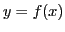

Next: Differentiable functions Up: Differentiation Previous: Derivative of a function Contents Index
Since
 and
and
 are always finite and have
definite values, the expression
are always finite and have
definite values, the expression
Since the derivative of a function of  is in general also a function of
is in general also a function of  ,
the symbol
,
the symbol  is also used to denote the derivative of
is also used to denote the derivative of  .
.
Hence, if ,
we may write
,
which is read ``the derivative of  with respect to
with respect to  equals
equals  prime of
prime of  .''
The symbol
.''
The symbol
 or
indicates the derivative of
or
indicates the derivative of  with respect to
with respect to  ;
;
indicates the derivative of  with respect to
with respect to  ;
;
indicates the derivative of with respect to  ;
;
 is an abbreviated form of
is an abbreviated form of
 .
.
The symbol is used by some writers instead of . If then